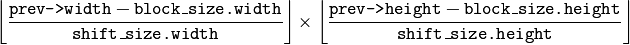

Motion Analysis¶
CalcOpticalFlowBM¶
Calculates the optical flow for two images by using the block matching method.
-
C:
cvCalcOpticalFlowBM(const CvArr* prev, const CvArr* curr, CvSize block_size, CvSize shift_size, CvSize max_range, int use_previous, CvArr* velx, CvArr* vely)¶
-
Python:
cv.CalcOpticalFlowBM(prev, curr, blockSize, shiftSize, max_range, usePrevious, velx, vely) → None¶ Parameters: - prev – First image, 8-bit, single-channel
- curr – Second image, 8-bit, single-channel
- block_size – Size of basic blocks that are compared
- shift_size – Block coordinate increments
- max_range – Size of the scanned neighborhood in pixels around the block
- use_previous – Flag that specifies whether to use the input velocity as initial approximations or not.
- velx –
Horizontal component of the optical flow of

size, 32-bit floating-point, single-channel
- vely – Vertical component of the optical flow of the same size
velx, 32-bit floating-point, single-channel
The function calculates the optical flow for overlapped blocks block_size.width x block_size.height pixels each, thus the velocity fields are smaller than the original images. For every block in prev
the functions tries to find a similar block in curr in some neighborhood of the original block or shifted by (velx(x0,y0), vely(x0,y0)) block as has been calculated by previous function call (if use_previous=1)
CalcOpticalFlowHS¶
Calculates the optical flow for two images using Horn-Schunck algorithm.
-
C:
cvCalcOpticalFlowHS(const CvArr* prev, const CvArr* curr, int use_previous, CvArr* velx, CvArr* vely, double lambda, CvTermCriteria criteria)¶
-
Python:
cv.CalcOpticalFlowHS(prev, curr, usePrevious, velx, vely, lambda, criteria) → None¶ Parameters: - prev – First image, 8-bit, single-channel
- curr – Second image, 8-bit, single-channel
- use_previous – Flag that specifies whether to use the input velocity as initial approximations or not.
- velx – Horizontal component of the optical flow of the same size as input images, 32-bit floating-point, single-channel
- vely – Vertical component of the optical flow of the same size as input images, 32-bit floating-point, single-channel
- lambda – Smoothness weight. The larger it is, the smoother optical flow map you get.
- criteria – Criteria of termination of velocity computing
The function computes the flow for every pixel of the first input image using the Horn and Schunck algorithm [Horn81]. The function is obsolete. To track sparse features, use calcOpticalFlowPyrLK(). To track all the pixels, use calcOpticalFlowFarneback().
CalcOpticalFlowLK¶
Calculates the optical flow for two images using Lucas-Kanade algorithm.
-
C:
cvCalcOpticalFlowLK(const CvArr* prev, const CvArr* curr, CvSize win_size, CvArr* velx, CvArr* vely)¶
-
Python:
cv.CalcOpticalFlowLK(prev, curr, winSize, velx, vely) → None¶ Parameters: - prev – First image, 8-bit, single-channel
- curr – Second image, 8-bit, single-channel
- win_size – Size of the averaging window used for grouping pixels
- velx – Horizontal component of the optical flow of the same size as input images, 32-bit floating-point, single-channel
- vely – Vertical component of the optical flow of the same size as input images, 32-bit floating-point, single-channel
The function computes the flow for every pixel of the first input image using the Lucas and Kanade algorithm [Lucas81]. The function is obsolete. To track sparse features, use calcOpticalFlowPyrLK(). To track all the pixels, use calcOpticalFlowFarneback().
Help and Feedback
You did not find what you were looking for?- Ask a question on the Q&A forum.
- If you think something is missing or wrong in the documentation, please file a bug report.